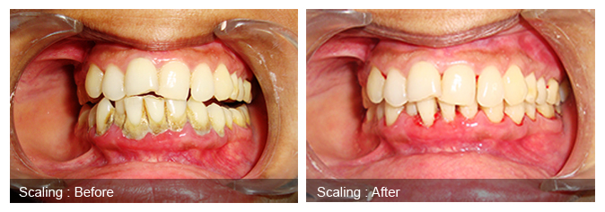

Dental cleanings involve removing plaque (soft, sticky, bacteria infested film) and tartar (calculus) deposits that have built up on the teeth over time. Your teeth are continually bathed in saliva which contains calcium and other substances .This chalky substance will eventually build up over time, like limescale in a pipe or kettle. Usually it is tooth coloured and can easily be mistaken as part of the teeth, but it also can vary from brown to black in colour. If the calculus (tartar, as dentists like to call it) is allowed to accumulate on the teeth it will unfortunately provide the right conditions for bacteria to thrive next to the gums resulting in diseases related to underlying gums and bone tissue, which eventually leads to mobile teeth. The purpose of the cleaning and polishing is basically to leave the surfaces of the teeth clean and smooth so that bacteria are unable to stick to them and you have a better chance of keeping the teeth clean during your regular home care. Also it leaves your teeth feeling lovely and smooth and clean, which is nice when you run your tongue around them. Scaling if done at a proper time, that is, every six months to remove calculus, the cycle of gum disease is broken & the onset of gum disease is prevented.
Age old wrong notations about the scaling of teeth are absolutely baseless, that is:
1. Scaling causes weakening & mobility of teeth.
2. Increased gaps than before.
3. Teeth become sensitive.
1. May be the deposits are removed too late, at a stage when most of the bone is lost & teeth are temporarily cemented together with hard calculus, tooth may move after scaling. Hence scaling does not make teeth loose, they have already become loose due to calculus. Only the removal of patch of calculus has set in the mobility. This happens at a very late stage.
2. In some cases there are gaps between teeth which get covered by tooth colored tartar. On removal of this tartar the patient feels the gap has occurred due to cleaning of teeth, which is wrong.
3. As the tartar is removed, the concealed part of the teeth is exposed to the oral environment thereby causing mild to moderate sensitivity to the teeth, which is transient. The sensitivity vanishes in a day or two and most of the patients do not even experience this sensitivity.
REST ASSURED SCALING WILL NOT WEAKEN YOUR TEETH RATHER IT WILL MAKE THEM STRONGER.
